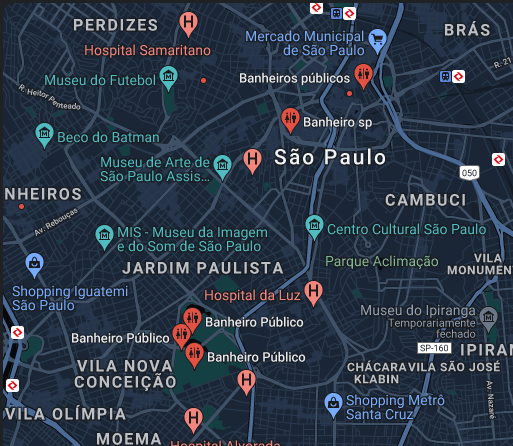

Onde encontrar? Geolocalização de banheiros com a caixa solidária.

Encontre rapidamente um banheiro que possua nossa caixa solidária.
Faça você também a diferença na vida da mulher, contribuir com a caixa solidária é aumentar a qualidade de vida de alguém.
Se cuide, se ame e viva melhor